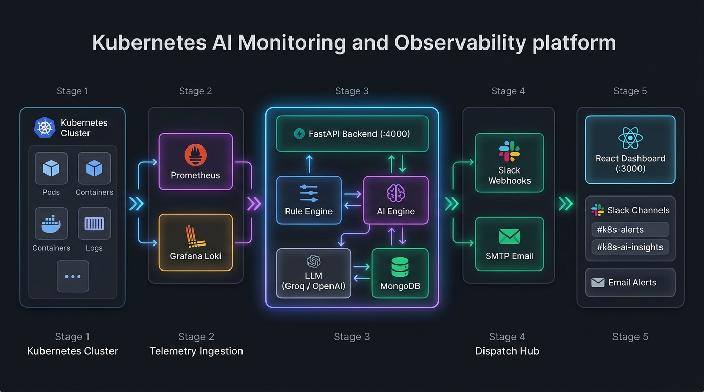

☸️ K8s Monitoring Tool: Live Data Flow
Autonomous AI Observability & Monitoring Platform. Select a scenario and press Start to watch live data stream through the system architecture.
🗺️ Architecture & Flow Overview (5-Stage Pipeline) Click to collapse/expand ▾

Stage 1: Workload (Pods/Logs) → Stage 2: Telemetry Ingestion (Prometheus/Loki) → Stage 3: FastAPI Core (Rule & AI Engines) → Stage 4: Intelligence & Store (LLM/MongoDB) → Stage 5: Dispatch & Delivery (Slack, Email & Dashboard)
Flow Speed: